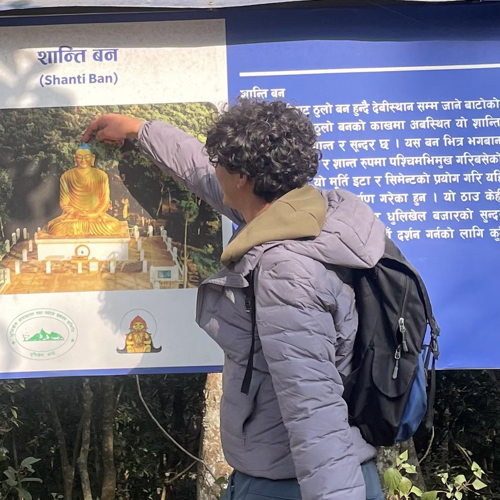
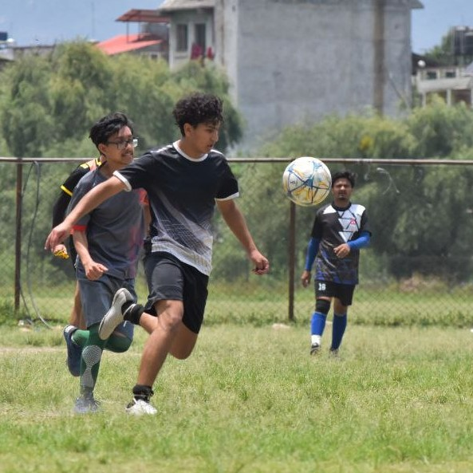
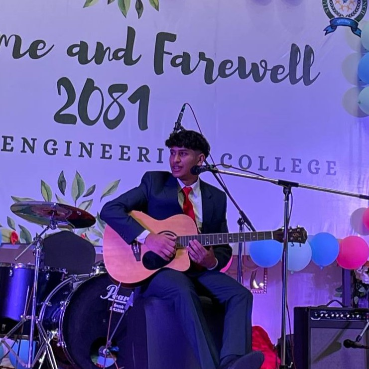
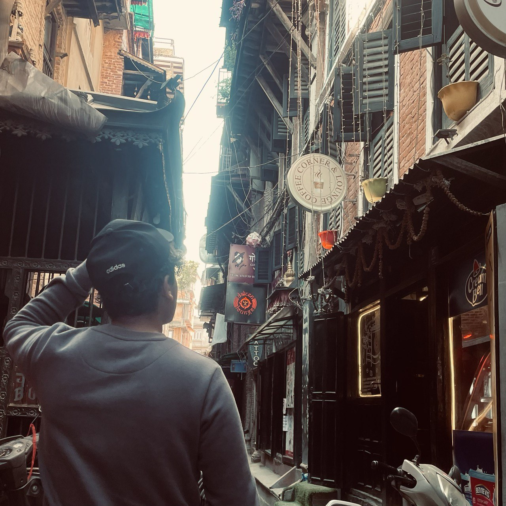
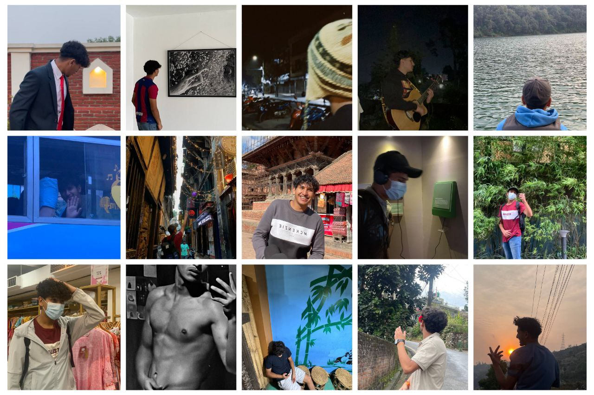

About Me
←
⌂

Hello! I’m Prithak, a 20-year-old computer engineering student based in Banepa with a passion for technology and innovation.
I’m deeply interested in web development and programming, constantly exploring and learning to expand my skills in these dynamic fields.
Creativity drives me, whether I’m crafting intuitive web designs or tackling complex coding challenges.
Alongside my technical pursuits, I’m an active and social individual who thrives in both leadership roles and
as a collaborative team member, always aiming to bring out the best in any group I’m part of.
With a curious mind and a dedication to growth, I’m excited to contribute to the ever-evolving world of technology
while leaving a creative mark along the way.
I am driven by an unquenchable thirst for knowledge, always eager to learn and grow in any way I can. While I humbly admit that there’s
still so much I don’t know, I embrace every opportunity to expand my horizons and improve myself. Whether it’s diving into new
technologies, tackling challenging tasks, or collaborating on exciting projects, I’m always ready to roll up my sleeves and contribute
in any way possible. I believe that every experience, big or small, is a stepping stone to becoming better, and I’m genuinely excited
to connect, learn, and create with like-minded individuals.

From a young age, I have been deeply immersed in sports, with football and chess taking center stage in my life.
Football has been my go-to for staying active, teaching me discipline, teamwork, and perseverance both on and off the field.
On the other hand, chess has sharpened my strategic thinking and problem-solving skills, instilling patience and mental clarity.
These contrasting yet complementary pursuits have helped me develop a balanced mindset, allowing me to adapt and excel in high-pressure
situations, whether it's in sports or professional challenges.
Beyond just playing, my passion for sports has shaped me into someone who values sportsmanship,
camaraderie, and healthy competition. Be it collaborating with teammates on the field or strategizing over a chessboard,
I thrive in environments that challenge me to grow and push my limits. These experiences have molded my leadership qualities
while reinforcing my ability to work seamlessly as part of a team, attributes that I carry into every endeavor I undertake.
Music has always been more than just a hobby for me—it’s a core part of who I am and how I express myself.
Playing the guitar, writing poems, and composing songs allow me to channel my creativity and emotions into something
tangible and meaningful. The process of producing music has taught me the value of persistence, as every note and lyric
needs careful attention to detail and harmony. It’s a deeply fulfilling experience that mirrors the dedication and precision
I bring to my professional endeavors, whether it’s crafting code or collaborating on a project.
Beyond creating my own work, I am constantly inspired by the artistry of others.
Exploring different genres and understanding diverse artistic perspectives fuels my creativity and drives me to innovate
in my craft. This appreciation for collaboration and learning from others translates seamlessly into my professional life,
where I embrace new ideas and strive for excellence. Music, much like technology, is about connecting with people, telling
stories, and creating something that resonates—a principle I carry into every aspect of my personal and professional journey.

From a young age, I’ve been deeply curious about the world and everything it has to offer.
Whether it was participating in school events, joining clubs, or trying my hand at new skills,
I made it a point to be involved in as much as I could. This enthusiasm wasn’t just about being busy;
it was about experiencing life to the fullest and learning from every opportunity. I’ve always believed that stepping
outside of your comfort zone is where the real growth happens, and that mindset has driven me to embrace challenges,
both big and small.
This hunger for new experiences naturally extends to my love for travel and adventure.
Exploring new places, meeting people from different walks of life,
and understanding diverse cultures have been incredibly enriching. Each journey,
whether it’s a short trip or an unexpected detour, feeds my curiosity and broadens my perspective.
This same sense of exploration and adaptability translates into my professional life, where I’m
always eager to take on new challenges, learn new skills, and adapt to evolving circumstances.
Life, to me, is a collection of moments and experiences, and I strive to make each one meaningful
while growing into the best version of myself.


In conclusion, my journey is defined by a constant pursuit of passion, curiosity, and creativity across every aspect of
my life—whether in technology, sports, music, or exploration. As a dedicated computer engineering student, an active sports
enthusiast, a creative soul with a love for music and storytelling, and an adventurer seeking new horizons, I aim to blend
these diverse experiences into a dynamic and well-rounded professional identity. With an open mind and an eagerness to grow,
I am excited to contribute meaningfully, embrace opportunities to collaborate, and continue learning and creating.